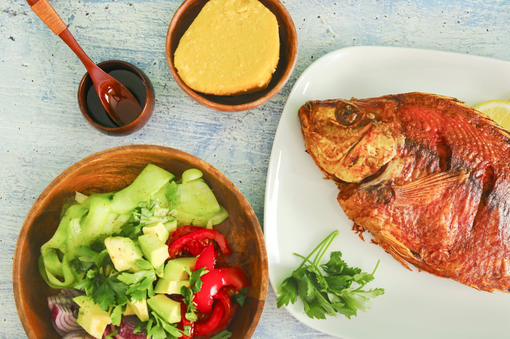
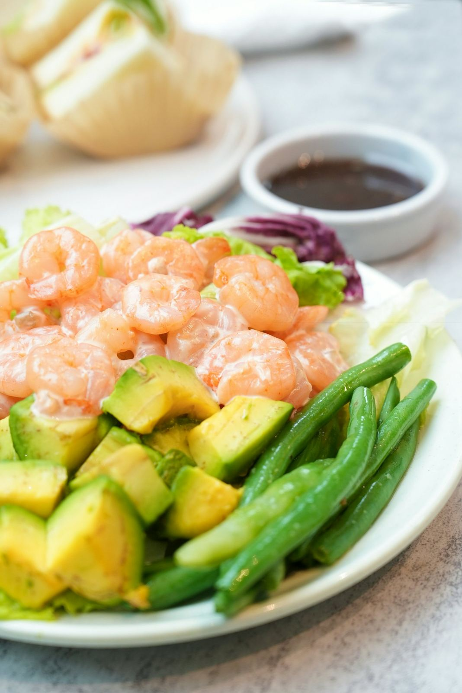

Accueil / Restaurants
Restaurants & snack-bar
Saveurs locales et européennes, au restaurant ou au bord de la piscine.
À table
Deux restaurants, un snack-bar
Du petit-déjeuner aux dîners d'affaires, nos cuisines marient les classiques gabonais et européens. Au bord de la piscine, le snack-bar sert grillades, salades et jus frais.
- Petit-déjeuner6 h 30 – 10 h
- Déjeuner12 h – 15 h
- Dîner19 h – 22 h 30
- Snack-bar piscine10 h – 20 h


Exemples de plats
La carte
Carte indicative, selon le marché et la saison.
Un séjour à Libreville ?
Choisissez votre hôtel, vos dates et votre chambre : confirmation rapide sur WhatsApp.